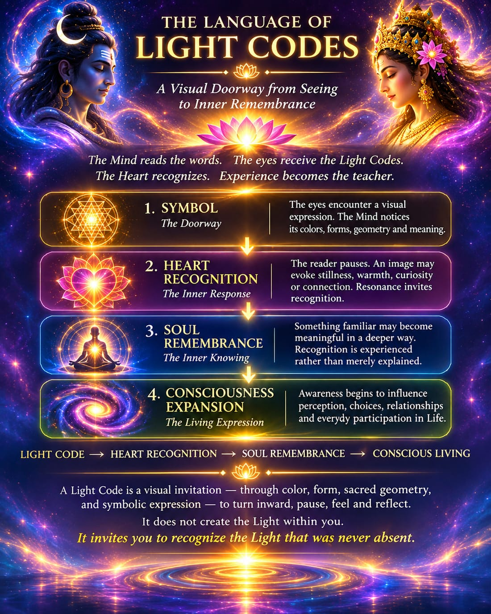
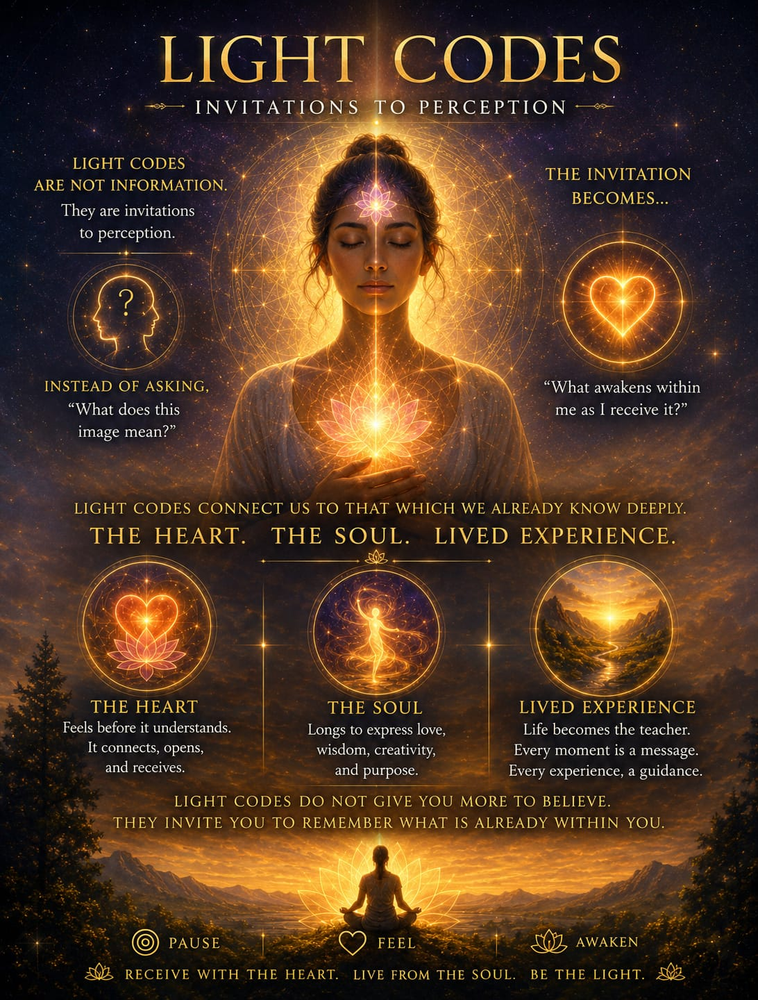

Consciousness Calling
THE LANGUAGE OF LIGHT CODES
From Seeing to Inner Remembrance
The Mind reads the words.
The eyes receive the Light Codes.
The Heart recognizes.
Experience becomes the teacher.
Throughout this journey, you have encountered Light Codes alongside words, reflections, and lived experiences. A Light Code is a visual invitation.
Through color, form, sacred geometry, and symbolic expression, it offers another doorway into contemplation. The Mind may first observe the symbol. The Heart may respond through stillness, feeling, or recognition. What was once understood through words may begin to carry a deeper meaning through personal experience.
SYMBOL → HEART RECOGNITION → SOUL REMEMBRANCE → CONSCIOUSNESS EXPANSION
THE LANGUAGE OF LIGHT CODES

THE LIGHT CODE IS A DOORWAY. THE HEART RECOGNIZES. LIFE BECOMES THE EXPRESSION.
These are possible movements of experience—not compulsory stages or promises of a particular result. You do not need to understand every symbol or feel something extraordinary. Simply observe, pause, and allow your own experience and discernment to guide you.
The Light Code does not create the Light within you.
It invites you to recognize the Light that was never absent.
The image is a doorway. The Heart is where recognition happens. Life is where that recognition becomes visible.
RECEIVE → REALIZE → RADIATE
